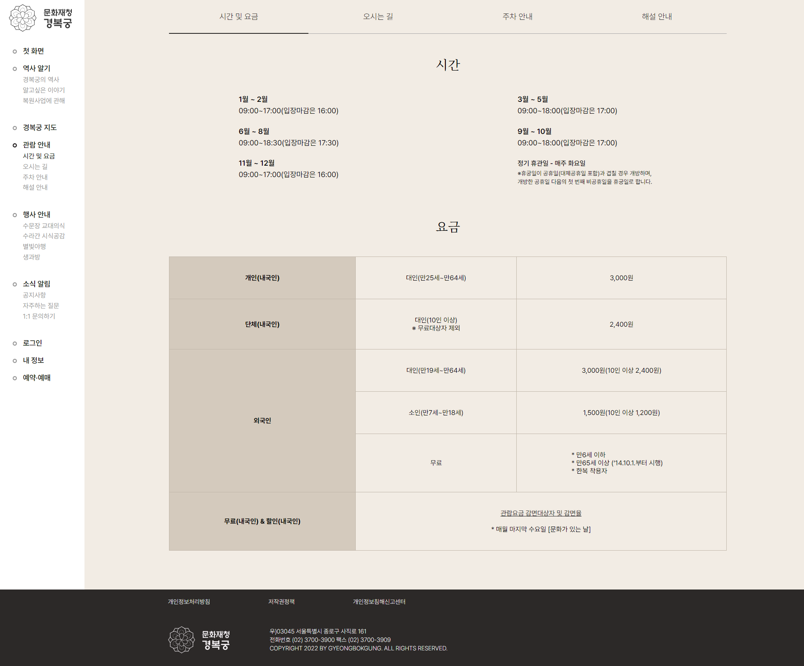
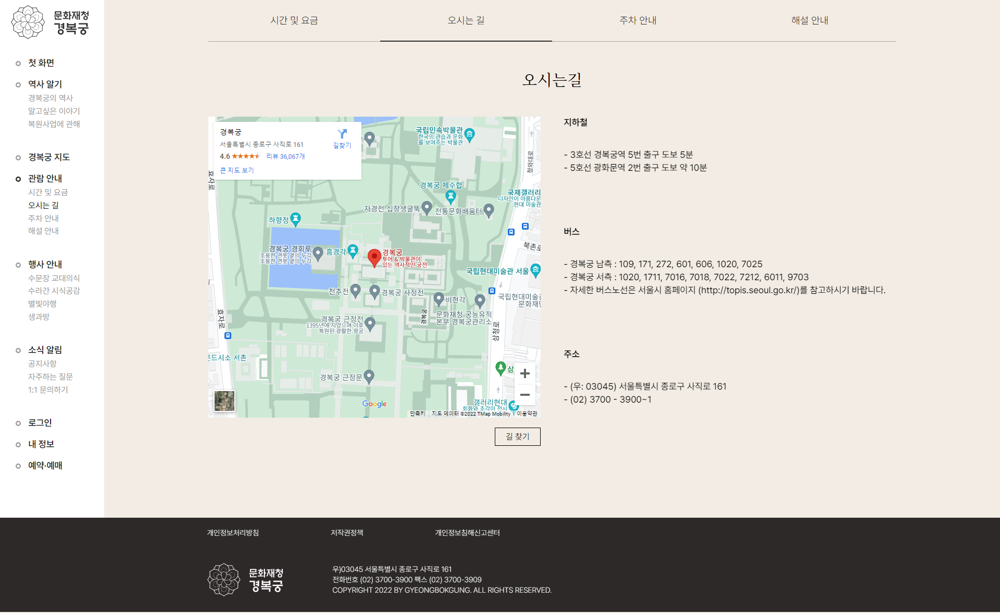
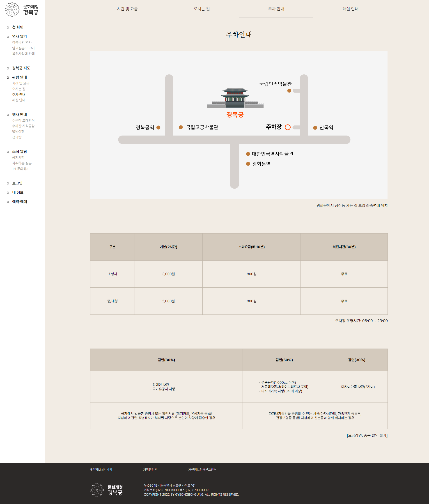
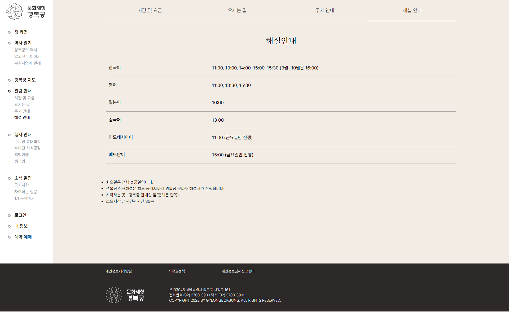

01. CONCEPT
대중의 시선 집중, 정보 전달, 편의성 증가에 중점을 두었습니다. 그에 따라 과한 텍스트로 집중력을 저해하는 요소를 제외하거나 방문자가 흥미를 가질만한 방식으로 변경하는 등 현대에 맞는 모던함, 높은 접근성이라는 리뉴얼 전략을 수립했습니다.
02. GRID SYSTEM
- Full width : 2560px
- Grid width : 1920px
- column width : 128px
- Gutter width : 105px

03. FONT
-
Noto Serif KR

-
pretendard

04. COLOR
경복궁의 고풍스러움과 멋스러움을 드러내기 위해 기존의 웹사이트와 다르게 전반적으로 채도가 높지 않은 톤을 유지했습니다. 전체적인 분위기를 한 단계 낮춰 경복궁이 지닌 오랜 역사와 웅장함을 드러내고, '왕이 머문 처소'라는 의미를 살리기 위해 진중한 분위기를 조성하고자 했습니다.
-
Background
R: 242
G: 236
B: 228
#f2ece4
-
Point color
R: 44
G: 41
B: 40
#2c2928
-
Sub color
R: 167
G: 167
B: 167
#a7a7a7
05. DESIGN
웹사이트 방문객의 첫인상을 좌우하는 대문인만큼 디자인적인 면과 기능적인 면 모두 놓치지 않고자 노력했습니다. 한번의 스크롤마다 하나의 섹션이 보여지게끔 기능을 구현하였고 각 섹션에는 주메뉴의 내용을 간략히 담아 방문자에게 이정표가 될 수 있게끔 컨텐츠를 구현하였습니다.
   